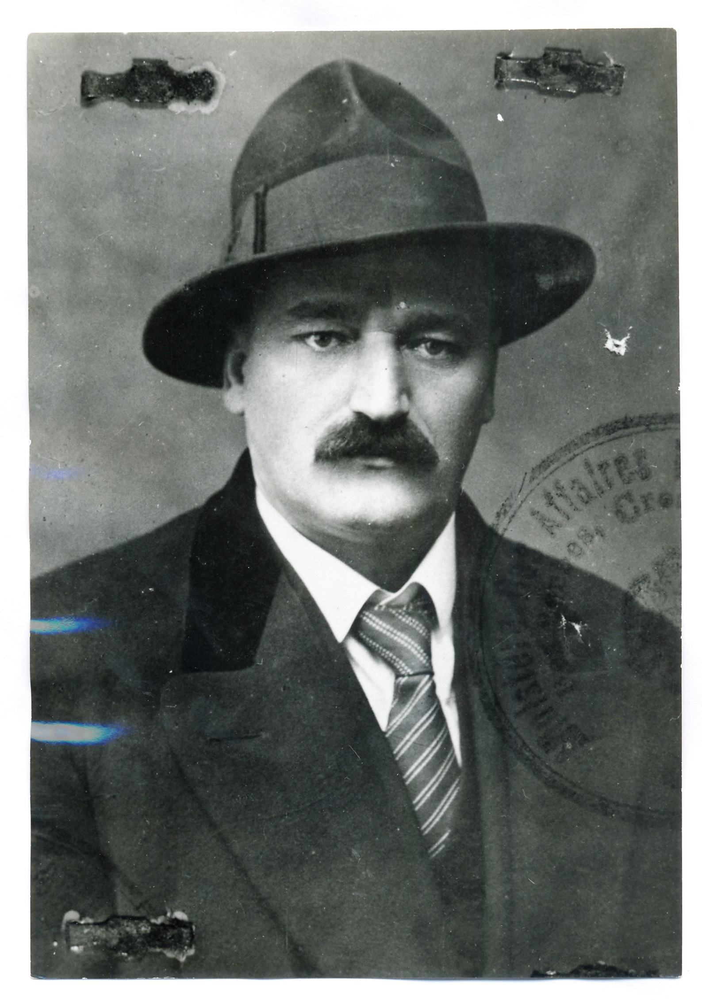
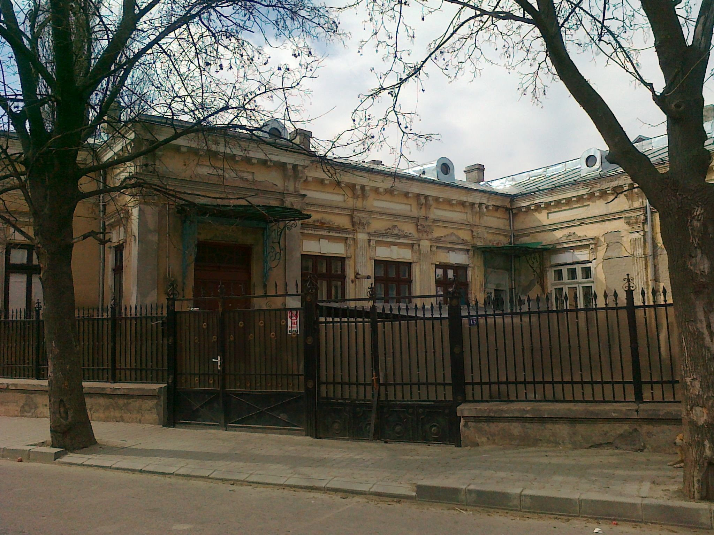

1Članek obravnava diplomatsko delovanje celjskega odvetnika, literata in politika Antona Novačana (1887–1951). Na podlagi arhivskega gradiva in spominskih virov je predstavljeno Novačanovo konzularno delovanje v različnih krajih, še zlasti pa v romunskem obdonavskem pristaniškem mestu Brăili, Kairu in v Celovcu, kjer je lahko od blizu opazoval naraščanje nacistične moči. Ovrednoteni so tudi Novačanovi pogledi na jugoslovansko politiko med drugo svetovno vojno, ko je našel zatočišče na Bližnjem vzhodu.
2Ključne besede: Anton Novačan, diplomacija, politika, Jugoslavija, druga svetovna vojna
1The article deals with the diplomatic activities of the Celje lawyer, writer, and politician Anton Novačan (1887–1951). Based on archival materials and memorial sources, Novačan’s consular activities in various places are presented, especially in the Romanian Danubian port city of Brăila, Cairo, and Klagenfurt, where the expansion of the Nazi power can be closely observed. Novačan’s outlook on Yugoslav politics during World War II, when he found refuge in the Middle East, is also evaluated.
2Keywords: Anton Novačan, diplomacy, politics, Yugoslavia, World War II
1Med slovenskimi diplomati v kraljevi jugoslovanski diplomaciji je bil prav posebna pojava odvetnik, literat in politik Anton Novačan (1887–1951), rojen v Zadobrovi pri Celju. Kot beremo v članku izpod peresa Franceta Koblarja v Slovenskem biografskem leksikonu, je izhajal iz številčne družine, v kateri se je rodilo kar deset otrok. Osnovno šolo je končal v Celju, v četrtem razredu nižje gimnazije je padel iz grščine, nato pa je po večkratnih menjavah šol na Hrvaškem končno leta 1908 uspel maturirati v Varaždinu. V naslednjih letih je veliko potoval, od Prage in Pariza do Münchna in Moskve. Tudi med prvo svetovno vojno je pogosto menjal bivališče, bil je nekaj časa celo zaprt, največkrat pa se je mudil v Pragi, kjer je tudi promoviral iz prava. Med prevratom na prehodu iz habsburške monarhije v novo državo se je znašel v Zagrebu, kjer je bil imenovan za člana osrednjega odbora Narodnega veča Slovencev, Hrvatov in Srbov. Zadolžen je bil »za akcijo v okupiranih krajih«, ki so jih zasedli Italijani, o svojem delovanju pa je moral poročati Franu Vodopivcu kot namestniku predsednika Pisarne za zasedeno ozemlje.1 Novačan je bil po ustanovitvi nove države dejaven na številnih področjih. Čeprav je bil pri svojih poklicnih izzivih pogosto nestanoviten, pa je vendarle interes za službovanje v kraljevi diplomaciji postal stalnica v njegovem življenju. Novačanovo diplomatsko dejavnost je pred skoraj štirimi desetletji ob izdaji Celjanovih spominov na drugo svetovno vojno v temeljnih črtah opisal že Bruno Hartman, ki je izbrskal marsikatero zanimivo podrobnost iz njegovega službovanja v različnih državah.2 V tem prispevku bo Hartmanova življenjepisna pripoved dopolnjena z arhivskimi viri, ki še niso bili pritegnjeni v raziskave.
1V slovenskem tisku prvič naletimo na omembo Novačana v kontekstu konzularne kariere v začetku leta 1920, ko je javnost izvedela za večji niz slovenskih uradniških imenovanj v diplomatskem aparatu Kraljevine SHS: Stanko Majcen je postal pisar I. razreda na zunanjem ministrstvu, Ivan Perne na poslaništvu v Atenah, Vladimir Rybář v Bruslju, Ljudevit Koser v Varšavi in Vladimir Kavčnik v Kairu. Pravcata slovenska diplomatska trdnjava je bila takrat Praga, kjer je jugoslovansko predstavništvo vodil Ivan Hribar, ki so se mu v začetku leta 1920 pridružili kot tajnik V. razreda Srečko Brezigar, kot pisarja I. razreda pa Zdravko Wigele in Anton Novačan.3 A od Prage se je moral nadobudni diplomat zaradi spora s Hribarjem kmalu posloviti.4 Konec oktobra 1920 je bil sprejet Novačanov izstop iz državne službe.5 Kasneje je v svojem življenjepisu kot razlog navedel željo, da se posveti političnemu delu.6 V državno službo se bo impulzivni Celjan še vračal, a jo vedno znova tudi na različne načine zapuščal. Ob pogostem menjavanju funkcij v diplomatskem aparatu se je naučil številnih jezikov: obvladal je francoščino, nemščino in češčino, znal pa se je sporazumevati tudi v ruščini, poljščini, italijanščini in angleščini.7 Iz njegovih dnevniških zapiskov je razvidno, da je francoščino, ki je bila takrat še vedno ključni diplomatski jezik, dobro obvladal. To pa ne pomeni, da je bil osebno vedno zadovoljen s svojim nivojem znanja. V začetku junija 1931 je, denimo, po pogovoru, ki ga je imel kot konzul z dvema Armenkama, zapisal: »Razgovor vsakdanji. Govoril sem zelo slabo francosko.«8
2Znano je, da je bila Novačanova ambicioznost precejšnja, z načrti na številnih področjih delovanja je pogosto prehiteval samega sebe. Nekoč je zapisal: »Delati – to je vse. Edina rešitev je delo!«9 Že v ustanovnih letih jugoslovanske države se je preizkusil tudi na politični sceni, vendar ni napravil kakšne impresivne kariere.10 Tudi v notranji politiki je namreč pogosto spreminjal svoja stališča, pogosto se je sprl s političnimi zavezniki. Prijatelji so mu menda prigovarjali, naj se raje drži literature.11 Sprva je slovel kot zapriseženi republikanec in se je na političnem prizorišču povezal s Stjepanom Radićem, voditeljem stranke hrvaških kmetov, ki je dolgo prav tako nastopala pod republikansko zastavo. V ustanovni dobi Kraljevine Srbov, Hrvatov in Slovencev so Radićevi privrženci poskušali dobiti mednarodno podporo za oblikovanje hrvaške kmečke republike. Pri tem je nekaj časa sodeloval tudi Novačan. Konec pomladi 1919 je bil namreč v skupini Ljudevita Kežmana, ki je želela z italijansko podporo predstaviti hrvaške narodne zahteve na pariški mirovni konferenci.12 Skupaj z Radićem je nato Novačan nasprotoval sprejetju Vidovdanske ustave v konstituanti, razšel se je tudi s politiki Samostojne kmetijske stranke, ki so podprli vladni centralistični načrt.13 V političnih nastopih sta bili za oba značilni precejšnja vihravost in retorična drznost, a kmalu se je pokazalo, da kljub programski sorodnosti nista mogla dolgo shajati skupaj. Prav tako je tudi res, da je hrvaški tribun za sabo potegnil množice kmečkih privržencev, Novačan pa se je skozi politične vihre prebijal dokaj osamljen.
3Novačan si je med drugim dopisoval tudi s prvakom srbskih agrarcev Mihailom Avramovićem, ki je sodeloval pri njegovem celjskem glasilu Naša vas.14 Iz njune korespondence sledi, da je bil Novačan že takrat v dvomih, ali je s svojo politično usmeritvijo izbral pravo pot. Avramović ga je moral namreč večkrat spodbujati, naj bo vendar miren in vztrajen.15 Pohvalil je mojstrski stil in vsebino Naše vasi, pri čemer ga je tolažil, naj se ne da zmesti od napadalcev ter naj ohrani mirnost in dostojanstvenost.16 Avramović je vedel za Novačanove simpatije do hrvaškega kmečkega gibanja, a je bil sam glede ciljev slednjega bolj skeptičen, češ da Radićevih pogledov na družbeno ureditev ne razume.17 Novačan je poskušal krmariti med obema, a si je prislužil še očitke hrvaškega tribuna o srbofilskih stališčih. Odgovor Naše vasi je bil odločen: »Nam Slovencem so Hrvati ravno tako dragi in mili kakor Srbi, Zagreb (brez Judov) ravno tako ljubimo kakor Beograd (brez cincarjev).«18 Glavna Novačanova programska zahteva je bila slovenska republika v okviru jugoslovanske konfederacije (vključno z Bolgari), v kateri bi vladali kmetje po zadružnem programu.19 A spomladi 1922 se je Avramovićevo navdušenje nad Novačanovim podeželskim gibanjem precej ohladilo. Zmotila ga je Celjanova odločitev, da oblikuje lastno agrarno stranko in ponudi sodelovanje vsem ostalim strankam v državi. Prav tako se ni strinjal z Novačanovo oznako, da naj bi bila Avramovićeva stranka zgolj glavna predstavnica srbskega kmeta, saj je srbski prvak nasprotoval delitvi kmečkega stanu na »plemena«.20 Novačan pa se je naposled razšel tudi z Radićem, razlog naj bi bil v hrvaških ambicijah po podreditvi Prekmurja in nekaterih vzhodnih slovenskih občin.21
4S propagiranjem republikanske ideje je Novačan med drugim vzbudil tudi pozornost izseljenskega pisatelja Louisa Adamiča, ki je bil tudi naročnik njegovega glasila Naša vas.22 V pismu, ki ga je napisal Novačanu sredi septembra 1922 v kalifornijskem San Pedru (sicer delu Los Angelesa), je Adamič izrazil precejšen dvom, ali bi bilo republikanski model možno uveljaviti na ozemlju celotne Jugoslavije. Povod za pismo je bila odločitev jugoslovanskih oblasti, da ustavijo izhajanje Naše vasi,23 Adamič pa je Novačana poskušal potolažiti z ugotovitvijo, da je »reakcija« močna povsod, tudi v Združenih državah Amerike. Po Adamičevem mnenju naj bi bilo v ZDA manj svobode v družbenem življenju kot v Veliki Britaniji, na Švedskem ali Norveškem, čeprav so monarhije. V pismu Novačanu je izrazil razumevanje za monarhistična čustva Srbov, ker »da obožujejo osebnosti[,] okoli katerih je zgodovina ovila vence hrabrosti in slave, kot je slučaj kralja Petra, po komur je sedanji kralj podedoval vse[,] kar ni stari vzel s seboj v grob«. Sicer je pohvalil Novačanovo republikansko gibanje kot »gotovo hvalevredno«, ni pa mu pripisoval odločilnega vpliva za takojšnjo spremembo miselnosti ljudi. Njegova naloga naj bi bila tako dolgoročnega značaja, bila naj bi »razširjati svetlobo« ideje, predvsem v smislu informiranja o značilnostih republikanstva, »seznaniti bi bilo treba zlasti inteligenco, dijaštvo, in sploh misleče ljudi«. Adamič je Novačanu odsvetoval radikalno nastopanje, češ »da zastopniki vladajočega sistema ne bodo prenašali surovih osebnih napadov«, spremembe naj bi bilo treba doseči postopoma.24
1Očitno si je Novačan Adamičeve nasvete dobro zapomnil. Že naslednje poletje, v začetku avgusta 1923, se je po avdienci pri kralju Aleksandru opredelil za monarhijo Karađorđevićev. Svoje državnopravno prepričanje je spremenil v zameno za diplomatsko službo. Konec istega leta je bil imenovan za tiskovnega atašeja na poslaništvu v Varšavi. Njegova mesečna plača je znašala 1200 francoskih frankov.25 Toda že spomladi leta 1925 so se mu na zunanjem ministrstvu zaradi škandala, ki ga je povzročil v javnosti, zahvalili za sodelovanje. Zaljubljen je bil v poljsko plemkinjo Wando Rogowsko, zaradi katere je še za pol leta podaljšal bivanje na Poljskem.26 S sklepom zunanjega ministra Momčila Ninčića z dne 10. aprila 1925 je bil odpuščen iz državne službe.27

Hrani: Domoznanski oddelek Osrednje knjižnice Celje2Po odhodu iz diplomacije se je Novačan preživljal predvsem kot odvetnik, tik pred razglasitvijo šestojanuarske diktature 1929 je odprl odvetniško pisarno v Celju.28 Na literarnem področju pa so ga označevali za »najmarkantnejšega sodobnega poeta slovenske vasi«. Znano je, da ga je skoraj obsesivno zanimala tudi usoda grofov Celjskih, imel se je celo za potomca enega od njihovih nezakonskih sinov.29 Bogumil Vošnjak, ki je prav tako nihal med politiko in diplomacijo, je »tega celjskega grofa« nekoč označil za »političnega norca«.30 Ljubljanska premiera Novačanove drame Herman Celjski je v začetku maja 1928 požela pozitivne kritike, v liberalnem dnevniku Jutro so z izbranimi besedami pozdravili »novačansko silen korak naprej« v razvoju slovenske zgodovinske drame. Šlo naj bi za »produkt slovenske širine«, ki naj bi se videl »kakor srednjeveški grad na skali«. V intervjuju, v katerem je v luči krstne uprizoritveHermana Celjskega iskreno pojasnil svoje videnje pomena slavne rodbine za slovensko zgodovino, je poudaril, da je sledi o njej iskal praktično povsod, kjer je deloval, v Zagrebu, Beogradu, Budimpešti, Pragi in Varšavi. Menil je, da so Celjski bojevali »véliki boj za državno samostojnost ozemlja današnje Jugoslavije«, čemur naj bi bila podrejena tudi njihova ženitvena politika: »Iz Celja so se pletle niti na jug in vzhod, do Jadrana in v Bosno, v Zeto in Srbijo Jurja Brankovića.« Potegnil pa je tudi vzporednice s sodobnostjo, ko je ugotavljal, da so političnim ciljem Celjskih »nasprotovale vse tiste sile, ki nam nasprotujejo še danes«.31 Ambiciozno zastavljene trilogije, s katero bi poleg Hermanove opisal tudi Friderikovo in Ulrikovo usodo, mu mi uspelo dokončati.32
3V prvi polovici tridesetih let je Novačan politično deloval v krogu unitaristične in kralju zveste Jugoslovanske nacionalne stranke, v kateri so imeli od Slovencev ključno vlogo Albert Kramer, Ivan Pucelj in Drago Marušič.33 Politično si je bil blizu tudi z Albinom Prepeluhom, ki je ob nastanku nove države stal na avtonomističnih pozicijah. Vse so v dvajsetih letih družile simpatije do Radićevega gibanja in nasprotovanje Slovenski ljudski stranki Antona Korošca. Kot je razvidno iz Prepeluhove korespondence, pa njihovo zavezništvo ni bilo posebej trdno.34
4V diplomacijo se je Novačan vrnil spet s kraljevim posredovanjem. Jeseni 1930 je bil imenovan za konzula v romunskem obdonavskem pristaniškem mestu Brăili. Zamenjal je Savo Spasojevića, eksekvaturo mu je podelil romunski kralj Karel II., ki je prav tisto leto zasedel prestol.35 Na podlagi korespondence je mogoče sklepati, da mu je z dobro besedo na dvoru pomagal pridobiti konzulsko mesto takratni minister v beograjski vladi Ivan Švegel.36 Slednji se je lahko pohvalil z bogatimi diplomatskimi izkušnjami že iz habsburške monarhije, ko je služboval kot cesarski in kraljevi konzul predvsem v ZDA in Kanadi. Novačan je sodil v krog prijateljev, ki so bili na njegovem znamenitem gorjanskem posestvu Wilsonia vedno dobrodošli.37 Ko je postal član vladnega kabineta Petra Živkovića, je Novačana obveščal tudi o svojih ministrskih obveznostih, pri čemer ni pozabil poudariti, da mora sedeti »noč in dan« pri reševanju aktov, in to brez pomoči uradnikov.38 Novačana in Švegla je družilo tudi zanimanje za zgodovino Celjskih. Med ministrovanjem v Beogradu se je Švegel domislil, da bi v prestolnici postavil »spomenik slavnemu sinu slovenske savinjske doline, grofu Ulrihu Celjskemu«, ki naj bi bil žrtev zveze med »madžarskimi Hunyadijevci« in »dunajsko mafijo«.39 Iz svojega parka na Bledu je vzel bronasti kip ženske v naravni velikosti, ki moli, imenovan Molitva, katere avtor je bil znani hrvaški kipar Frano Kršinić.40 Podstavek kipa pa je opremil z napisom, o katerem se je posvetoval z Novačanom. V pismu celjskemu prijatelju je Ulrika označil za »enega prvih zagovornikov jugoslovanske zveze«.41 Končna verzija, napisa na spomeniku, se je nato skoraj v celoti skladala s predlogom, ki ga je Švegel predstavil Novačanu.
5Prijateljstvo z nečakom slavnega barona Josefa Schwegla potrjuje tudi fotografija Novačanove poroke 9. junija 1930 z Jožefo (Pepušo) Mahne v Vojniku. Obred je vodil znani duhovniški pisatelj Fran Saleški Finžgar, ki na skupinski fotografiji stoji v sredi za zakoncema, Švegla pa so posadili na častno mesto ob Novačanu.42 Zakon s precej mlajšo soprogo je bil očitno dinamičen, kar je razvidno iz enega od dnevniških zapiskov, nastalega dobrega pol leta po poroki: »Danes sva z ženo ostala popoldne sama v živem razgovoru – in zopet enkrat – brez prepira.«43 O odnosu med zakoncema značilno priča tudi Novačanov komentar neke Pepušine opazke na njegov račun: »Žena je naturna ovira vsakega napredka.«44 V njej je dolgo videl otroka: »Ona je otrok, visi na meni vsa kakor goba na vrbi, jaz sem ji vse na svetu.« Po poldrugem letu zakona, ko sta živela skupaj v Brăili, se je končno nehal spraševati, ali je imeti ženo pri opravljanju diplomatske funkcije »breme«. Zapisal je: »Tako pač mora biti.«45 Sčasoma se je njegova navezanost na soprogo povečala, a otrok nista imela.
6V času Novačanovega službovanja v Romuniji je štel konzularni zbor v Brăili kakšnih ducat članov. Poleg Jugoslavije so imele tam svojega konzula še Belgija, Češkoslovaška, Danska, Francija, Grčija, Italija, Nemčija, Nizozemska, Norveška, Portugalska, Švedska in Velika Britanija. Jugoslovanski konzulat je imel sedež na Bolintineanujevi ulici 15.46 O svojih kolegih v konzularnem zboru večinoma ni imel najboljšega mnenja, značilen je njegov opis trebušastega belgijskega častnega konzula, češ da je »pivopijec – jajcajedec – babojebec«.47 Sprva se je Novačan v Brăili kar dobro počutil. Švegla je zalagal s kaviarjem, minister pa mu je pošiljal cigarete.48 Toda kmalu se je začel dolgočasiti. Kako monotono je bilo tamkajšnje diplomatsko življenje, beremo v pismu njegovega naslednika Ivana Božiča: »Vi veste[,] da zakon inercije ima dve strani. V Brăili to pomeni inercijo v pravem smislu besede. Tukaj je vse inertno, okolina, mesto, življenje, vse …« Jugoslovani, službujoči na konzulatu, so si kratili čas z ladijskimi izleti ter »z vincem in paprikašem« preganjali vsakdanjo monotonijo. Včasih so ponoči s cigansko godbo zaplesali tudi kakšen tango ali boston.49
7Novačan je v Brăili postajal vedno bolj nezadovoljen. Če je še prvi mesec službovanja pisal, da se je »rešil za nekaj časa v inozemstvo«, kjer bo lahko opravil »nekaj svojih čisto idealnih literarnih zadev«, mu to kmalu ni več zadostovalo.50 V enem od pisem Prepeluhu se je pritoževal, da si v Romunijo sploh nikoli ni želel, ampak je »zagorel v idealnem hrepenenju po širokem svetu, po Ameriki«. Tam je namreč »nameraval posvetiti zadnja leta svoje mladosti z intenzivno pridobitvijo angleške kulture in z veliko akcijo med našimi emigranti za domovino«. Namesto tega pa je dobil Brăilo – »gnusno balkansko gnezdo trgovine in prostitucije«. Želel je odstopiti že v začetku mandata, a si tega ni drznil iz spoštovanja do kralja, jezo pa je zato stresal na gorenjskega rojaka: »Vse preveč je zijalo Švegelj razklopotal okrog o mojem konzulatu, medtem ko je na tihem v Beogradu delal na tem, da se mi da 'najmanje', češ, saj bo itak zadovoljen. No pa tudi Šveglju pride čas do živega – in mi smo tisti, ki bomo pisali historijo teh zadnjih let.« Novačanovo nezadovoljstvo je bilo celo tako močno, da je Prepeluhu zameril, ker se je udeležil »Švegljevega večera«, se pravi poslovilne večerje pred odhodom za poslanika v Argentino.51 Novačan se je tudi pritoževal, da se mu nihče več ne oglasi. Še zlasti ga je razjezilo, da je Kramer ob neki priložnosti obiskal Bukarešto, a ga kljub zgolj štiriurni oddaljenosti ni imel časa obiskati v Brăili. Po Novačanovem mnenju bi se morali Slovenci tukaj zgledovati po Srbih, »ki so lojalni, celo na najvišjih mestih[,] in ne poznajo človeka le takrat, kadar ga 'nucajo'«. Tudi za Švegla je napisal, da se mu oglasi redko, a »je nazadnje le še najboljši«.52

Hrani: Arhiv Studia diplomatica Slovenica8Očitno so Novačana razni spori v diplomatskih krogih prizadeli. 1. avgusta 1931 je zapisal: »Udarili so me po srcu.«53 Tri tedne kasneje je v svojem dnevniškem zapisu že nervozno čakal na odpoklic: »Zvečer v družbi – pusto. Zdi se mi[,] da ne ostanemo dolgo več v Braili. Čim prej – tem bolje. Samo odtod!«54 Ob koncu leta je bil že povsem obupan. Zapisal je: »Minulo leto je bilo najdaljše, najhujše in najmanj plodno leto v mojem življenju.« Konzulskega imenovanja sploh ni štel za nagrado, ampak kot nekakšno kazen, stranpot v svojem življenju: »Prišel sem v Brailo kot izgnanec. Tega čustva se nisem mogel otresti vse leto.« Depresija je porazno vplivala tudi na njegovo delovno motivacijo: »Delati nisem mogel. Misliti še manj.« Samokritično je obžaloval, ker ni prišla do izraza njegova siceršnja ustvarjalnost: »Storil nisem ničesar. Napisal nič, dasi sem zeval dolgočasje. Bojim se edino še, da se ne pogreznem popolnoma v vsakdanjost.« Samokritično je ugotavljal, da se ga je polastila lenoba, v brezdelju pa se je tudi močno zredil, na trebuhu je menda dobil »štiri prste masti«. Vse leto je upal, da ga bodo na ministrstvu premestili drugam, najprej v San Francisco, a so tja poslali drugega kandidata. Dobil pa je med obiskom Beograda obljubo, da bo lahko odšel v Celovec.55
1Novačan v Celovcu ni videl zgolj še ene konzularne funkcije, ampak odgovorno poslanstvo: »Zasanjal sem. Sto tisoč je naših še tam v jarmu, brez poguma, da bi se uprli, preden poginejo. Ali jih je mogoče rešiti še?« Ne samo, da ga je skrbela usoda koroških sonarodnjakov, zavedal se je tudi zahtevnosti položaja Slovencev na Primorskem, kjer »ginejo naši pod perfidnim Italijanom«. Bil pa je tudi kritičen do razmer v Jugoslaviji, kjer »tavamo v gospodarskih in idejnih krizah«. Še posebej naj bi to veljalo za Slovence: »Slovenstvo in njega obstoj je v krizi.« Grožnjo je videl predvsem v zagovornikih jugoslovanskega unitarizma, pri čemer ga je skrbela usoda slovenščine, saj so jo nekateri želeli degradirati na raven narečja: »Naš književni jezik dijalekt? Naj Srbohrvatarji in Hrvatosrbi pometejo najprej pred svojim pragom.« Komentar slovenskega literata je bil odločen: »Mi pišemo že štiristo let v enem vedno bolj razvijajočem se književnem jeziku, oni pa pišejo še danes v treh pravih dijalektih in se ne morejo še zediniti na eno pisavo, latinico ali cirilico.«56
2V Brăili je Novačan zdržal samo do marca 1932, ko ga je nadomestil Božič.57 Bil je prestavljen v Kairo, kar je komentiral z besedami: »Srečen sem in zadovoljen!«58 To je bila tudi zadnja zamenjava na konzulskem mestu v Brăili, saj je Jugoslavija spomladi 1934 konzulat ukinila.59 Kot je razvidno iz enega od pisem, ki jih je Novačan prejel od Božiča, se je moral slednji od funkcije posloviti, ker je vlada ponovno odprla konzulat v Bratislavi. Po njegovem mnenju je bila s tem tamkajšnji jugoslovanski koloniji narejena »velika škoda«, zlasti »ladje in trgovina bodo trpele veliko radi tega, ker [j]im je konsulat bil od velike pomoči«.60
3Po odhodu iz Romunije se je torej Novačan odpravil v Egipt, kjer je začel delati kot odpravnik poslov na kraljevem poslaništvu v Kairu.61 Iz tega obdobja se je ohranilo v diplomatskem arhivu pismo Rusinje Antoinette Kossowka, zavarovalne agentke, ki se je 15. februarja v Egiptu poročila z jugoslovanskim državljanom Vertagom. Slednji jo je menda osvojil s svojim leporečjem in obljubami, da iz tujine pričakuje precejšnjo vsoto denarja. V pismu, ki ga je napisala zunanjemu ministru Bogoljubu Jevtiću, se je ruska agentka pritožila, da je že dan po poroki spoznala, da jo je Vertag prevaral in da se je želel zgolj dokopati do njenih prihrankov. Zanjo se je začel pravi »pekel«, mož ni hotel prijeti za nobeno delo, obnašal pa se je baje tudi nemoralno. Naposled ga je nesrečna Antoinette že komaj po enem mesecu poroke zapustila. Za zaščito je zaprosila Novačana, ki pa se je po njenem pričevanju postavil na stran jugoslovanskega rojaka in ji celo ukazal, da se mora vrniti domov v roku petih dni. Ker ni ubogala, je o tem obvestil policijo, ki jo je privedla na postajo in tam zadržala v priporu. V obupu se je obrnila na Jevtića, da bi jo zaščitil pred »zlorabo oblasti« in »paradoksalnim arbitriranjem« Novačana, vendar iz ohranjene dokumentacije ni razvidno, kako se je afera končala.62
4V Kairu je Novačan ostal samo do poletja 1933. Novembra istega leta je bil namreč postavljen za konzula v Celovec, kjer je nastopil službo konec januarja 1934.63 V očeh dunajskih oblasti si je prislužil precej negativnih točk zaradi simpatiziranja s Hitlerjevimi ambicijami. Avstrijska policijska poročila so namreč ugotavljala, da se v zakotnih točilnicah druži z notoričnimi nacionalsocialisti. Menda je pripovedoval, da mu je v Berlinu sam propagandni minister Joseph Göbbels potisnil v roke svinčnik, češ naj napiše svoje zahteve na Koroškem.64 V avstrijskih obveščevalnih krogih je zato veljal za »strašnega škodljivca«, nad njim pa se je kralju Aleksandru pritožil celo britanski poslanik v Beogradu Neville Henderson. Kralj je kontroverznega konzula označil za »neumnega, a dobro mislečega«.65 Kmalu so se tudi po Ljubljani začele širiti informacije o konzulovih simpatijah do prihajajočega »novega reda«, zato je svojega »dragega kuma« pred zlonamernimi govoricami moral braniti tudi Švegel.66 Očitno Novačanu te govorice niso škodile, morda celo nasprotno: 10. aprila 1935 je bil imenovan za generalnega konzula.67 Verjetno mu je pri tem pomagala vnema pri preganjanju ustaških skupin. Prav po Novačanovem prihodu se je namreč okrepila jugoslovanska obveščevalna dejavnost o delovanju ustašev v Avstriji, kar so ugotavljali tudi na beljaškem policijskem komisariatu.68
1V Jugoslaviji, kjer je javnost 9. oktobra 1934 doživela šok zaradi marsejskega atentata na kralja Aleksandra, so se medtem bližale volitve. Švegel je sicer spodbujal Novačana, naj se jih udeleži, a sam na njih ni želel nastopiti.69 Da ne bi pozabil, komu je dolžan hvaležnost za imenovanje v Kairu, je celjskega prijatelja spomnil, da je bil za to zaslužen nihče drug kot »blagopokojni kralj« osebno.70 Novačanova nagnjenost k ekscesom pa očitno ni bila ravno v sozvočju z njegovim diplomatskim poslanstvom. Na majskih volitvah leta 1935 ga je tako spet potegnilo v politiko. Novačanu se je tokrat uspelo prebiti v beograjsko skupščino, kjer je kot član Jevtićevega kluba obtičal v opoziciji. Švegel mu je čestital z besedami, da so v opoziciji lahko srečni, ker imajo v svojih vrstah »tako hrabrega in dostojnega člana«, ki naj bi bil povrhu še »pravi potomec Celjanov«.71 Švegel je pohvalil Novačana, da je ohranil načelnost, ker ni »hotel izdati gospoda, na katerega listo« je prisegel, čeprav je »videl lumpe na desno in levo, spredaj in zadaj«.72
2Novačan, ki se je res imel za potomca grofov Celjskih, sicer v beograjski skupščini ni zdržal dolgo. Spomladi 1938 je bil imenovan za generalnega konzula v Bariju.73 A tudi v italijanskem pomorskem mestu ni bil zadovoljen. Imel je srečo, ker je imel v pomočniku zunanjega ministra Ivu Andriću sorodno pisateljsko dušo. Njuno prijateljstvo je izviralo še iz zagrebških časov, o čemer priča izvod Andrićeve knjige Ex Ponto s posvetilom »mom dragom drugu« iz leta 1918, ki je ohranjen v Osrednji knjižnici Celje.74 V enem od pisem je znameniti literat na delu v diplomaciji slovenskemu kolegu zaupal, da mu je sicer Beograd ljub, vendar mora opravljati službo, ki je težka in naj bi postajala vse težja. Novačanu je obljubil pomoč, da bo lahko odšel v Bratislavo.75
3Toda zaradi bližajočih se decembrskih skupščinskih volitev se je dogovarjanje o premestitvi zavleklo. Andrić je v pismu prosil kolega, naj potrpi še kak mesec, saj naj bi po koncu volilne gneče lahko premier Stojadinović hitreje reševal kadrovske zadeve. Ob koncu je Andrić Novačanu namenil še velik kompliment, da je njegov stari, nespremenjeni in nezamenljivi spoštovalec, ki naj bi z velikim interesom pričakoval plodove njegove samote v Bariju v obliki popolnih in poglobljenih književnih del: »Dosada je takodje jedna od muza.«76
1Tik pred začetkom druge svetovne vojne, 8. julija 1939, je Novačan naposled predal posle svojemu nasledniku v Bariju.77 Nato je živel v Beogradu, po aprilski vojni menda zaradi strahu pred celjskimi Nemci. Ko je Josip Vidmar pripotoval v Beograd, da bi si izposloval dovoljenje za ustanovitev Društva prijateljev Sovjetske zveze, ga je Novačan nagovoril, da skupaj zapustita državo. A ga ni prepričal, pa tudi sam je zapustil Beograd šele junija 1942, ko mu je neki šentjurski znanec nemškega porekla uredil potno dovolilnico za Bolgarijo. Čez Turčijo je 6. julija pripotoval v Jeruzalem in iskal priložnosti za sodelovanje s kraljevo vlado v emigraciji.78 Tu pa so ga čakala velika razočaranja. Najprej se je izkazalo, da so bili čeki, ki jih je kupil z zlatom pozimi 1941/1942 »od raznih tipov v Beogradu«, neveljavni. Tako je ostal povsem brez premoženja, saj so nacisti zasegli njegovo lastnino v Celju. Povrhu pa ga je dala vlada Slobodana Jovanovića konec leta 1942 zapreti in strpati v palestinsko taborišče v Latrunu, od koder so ga izpustili šele po 240 »strašnih dneh« konfinacije.79 To je menda predlagala jugoslovanska kraljeva obveščevalna služba, ki so ji zaupniki Draže Mihailovića posredovali namig, da je Novačan zapustil Beograd v sumljivih okoliščinah. Sumili so ga, da je nemški agent. Izpuščen je bil šele konec avgusta 1943 in se je mesec dni kasneje preselil v Kairo.80
2Novačan je postajal do jugoslovanske kraljeve vlade vedno bolj kritičen.81 Menil je, da je to »vlada impotentnih starcev«, ki »sedi na kahlicah in 'upravlja' nekaj poslaništev in konzulatov in zapravlja zlato našega naroda brez kontrole, kakor se starcem poljubi«. V njegovih očeh naj bi bila to »vlada, ki se hermetično zapira in igra vlogo predstavnice Slovencev, Hrvatov in Srbov, ne da bi se vprašala, kako ti Slovenci in Srbi gledajo na njo, še manj, kaj želijo in hočejo«. V svojem dnevniku ji je namenil naslednjo sodbo: »Ta vlada zasluži vešala!«82 Zlasti ga je motil vpliv načelnika Slovenske ljudske stranke Mihe Kreka, ki je dolgo časa v emigrantski vladi predstavljal Slovence. A ko se je kralj Peter II. s krogom najožjih svetovalcev odločil, da se hrvaško-srbskih zaostrovanj loti po jugoslovansko-unitarističnem receptu pokojnega očeta Aleksandra, in postavil uradniško vlado pod vodstvom Božidarja Purića, je med strankarskimi prvaki z ministrskega položaja ta odnesla tudi Miho Kreka. Za tolažbo je dobil diplomatsko funkcijo v rangu poslanika in bil postavljen za zastopnika kraljeve Jugoslavije v zavezniškem sosvetu za Italijo.83 Novačan, ki si je po tihem verjetno želel podobno funkcijo, je v dnevniku pikro zapisal: »Dr. Krek je postal ambasador. Torej, ta pa voditelj!«84
3Vpliv Britancev na jugoslovansko zunanjo politiko je še naprej ostajal odločilen, kar je bilo čutiti tudi v mali slovenski koloniji v Kairu.85 Primorski politik Ivan Rudolf je menil, da bodo Slovenci po vojni lahko izbirali med dvema opcijama: ali postanejo britanski dominion ali pa se priključijo Sovjetski zvezi. Takšno razmišljanje je Novačan v dnevniku 16. februarja 1944 zavrnil:
»Jasno je, da bo Rusija imela po tej vojni, nolens volens, svojo veliko politično besedo v Evropi. Jasno je, da se bo treba odločiti; vsem narodom Evrope stopi to pred oči: ali za vzhod ali zahod! Slovenci smo ravnokar na črti takšne razmejitve. Toda angleški dominon? Zakaj ne velika, federativna Jugoslavija? Zakaj postavljati sploh to vprašanje? Saj smo še v Jugoslaviji, ki je de iure po mednarodnem pravu še živa! Ali ni najbolje, da se strnemo vsi okrog mladega kralja in da ne premišljujemo, kako, kaj in kam?! «86
4Novačan, ki je obtičal v Kairu, je postajal vedno bolj nestrpen.87 Živel je v prepričanju, da sta z Izidorjem Cankarjem, ki je med vojno funkcijo jugoslovanskega poslanika v Buenos Airesu zamenjal z Ottawo, nekakšna konkurenta za visoko funkcijo: »Pamet mi pravi, da ne pridem v poštev, vendar mi domišljija (domišljavost) ne da miru. Izidor Cankar ali jaz? Seveda je Cankar močnejši.«88 Vlada je 17. julija 1944 sprejela sklep, da je treba nadaljevati z »reorganizacijo in čiščenjem« v zunanjem ministrstvu.89 A novačenje za vodilna diplomatska mesta se je nadaljevalo brez Novačana. To je razvidno tudi iz pisma iz obupa Cankarju 1. avgusta 1944. Uvodoma mu je zaupal, da ne dvomi o njegovih »dobri volji, sposobnosti in veliki ljubezni za nesrečno domovino«. V njem je videl naslednika umrlega slovenskega državnika Antona Korošca, nekdanjega prvaka Slovenske ljudske stranke, »ki je bil več, kakor smo ga cenili«. Nato je izrekel kritiko emigrantske politike: »Naša emigracija že tri leta zanemarja celo severno Slovenijo. Še omenijo včasih Koroško, o Štajerski in Prekmurju, o naših zahtevah po novih mejah na severu – nič!« Pritoževal se je, da njegov glas ni upoštevan: »Krek je bil tu, govoril sem z njim, pa je kar hitro opravil. Jaz sem edini inteligent Slovencev s severa v emigraciji.« Odločilni faktorji naj bi spregledovali dejstvo, da je bil skupščinski poslanec, »prvi predsednik prve slov[enske] republikanske stranke in prvi federalist«. Zahteval je »najmanj mesto pomočnika – Slovenca v zunanjem ali pa mesto poslanika v Kairu ali v Vatikanu«. Cankarja je zaprosil za podporo: »Pričakujem, da boste Slovenec, da boste Cankar, tak, kakor smo Vas cenili, tudi v mojem vprašanju. /…/ Zdaj gre za več, gre za ostanke naše krvi, gre za naš obstanek.«90 Novačan si je želel predvsem v prestolnico Stalinove države, kar je razvidno iz pisma Cankarju čez dva dni: »Pošljite me v Moskvo! Jaz osebno poznam mnogo ruskih ljudi, vse Slovence, ki so tam, jaz bi si upal in mislim, edini jaz bi mogel povedati Rusom vse tisto, česar Srb ali Hrvat kar sam povedati ne more, ne sme.«91 Cankar je pismi sicer prejel, a pri maršalu posredoval verjetno ni, čeprav je za to dobil kmalu priložnost.
5Ob koncu druge svetovne vojne je Novačan pristal v Trstu, kjer se mu je po posredovanju Josipa Vidmarja po petih letih pridružila tudi soproga.92 A v domovino si kljub Vidmarjevemu prigovarjanju zaradi komunistov ni upal. V Rimu je nekaj časa poskušal ustanoviti novo politično formacijo, Jugoslovanski demokratski center, vendar kot protiutež skupini Mihe Kreka. Za takšno zamisel ni uspel pridobiti somišljenikov, Vošnjak mu je celo očital »pomanjkanje takta« in se je čudil, kako je lahko nekdo s takšnimi lastnostmi sploh slovenski diplomat.93 Ob prebiranju Novačanovih vtisov o delu na različnih funkcijah v tujini se zdi, da je v diplomaciji videl zanimive izzive, a ni zmogel nikoli dovolj vztrajnosti, da bi pri tem pustil trajnejši pečat. Tega se je zavedal tudi sam, ko je nekoč zapisal: »Kjerkoli sem že bil, povsod sem hrepenel stran, drugam, obetajoč si, da bo tam na zaželjenem mestu meni bolje, da bom tam odrešen.«94 Novačanov zadnji beg v tujino se je končal 22. marca 1951 v Argentini.
* Članek je nastal v okviru raziskovalnega programa P6-0138 (A) Preteklost Severovzhodne Slovenije med srednjo Evropo in evropskim jugovzhodom, ki ga sofinancira Javna agencija za znanstvenoraziskovalno in inovacijsko dejavnost Republike Slovenije iz državnega proračuna.
** Dr., redni profesor, znanstveni svetnik, Filozofska fakulteta Univerze v Mariboru, Koroška cesta 160, SI-2000 Maribor in Zgodovinski inštitut Milka Kosa ZRC SAZU, Novi trg 2, SI-1000 Ljubljana, andrej.rahten@um.si; ORCID: 0009-0005-0584-619X
1. NUK Ms 1645, Vodopivčevo pismo Novačanu, brez datuma.
2. Hartman, Veliko kolo, 351–64.
3. Slovenec, 6. 1. 1920, 4, Dnevne novice.
4. Hartman, Veliko kolo, 356.
5. AJ 334/179, potrdilo zunanjega ministrstva o Novačanovem delu v državni službi, 2. 4. 1924. Zahvaljujem se dr. Aleksandri Gačić, ki mi je pomagala pridobiti zanimivo diplomatsko gradivo iz Arhiva Jugoslavije v Beogradu.
6. AJ 334/179, Novačanov življenjepis za zunanje ministrstvo, 13. 6. 1930.
7. AJ 334/179, Novačanov dosje uslužbenca, rubrika XIV – znanje tujih jezikov.
8. NUK Ms 1645, Dnevniške zabeležke, 15. 1. 1931.
9. NUK Ms 1645, Dnevniške zabeležke, 12. 7. 1925.
10. Prim. Grdina, Kratka zgodovina, 77–95. Berberih-Slana, Stjepan Radić, 37–60.
11. Hartman, Veliko kolo, 355.
12. KLA 684, šk. 2, policijsko poročilo o aretaciji Ljudevita Kežmana, Heinricha Morpurga, Alberta Kornitzerja, Vladimirja Mačka in Antona Novačana v Zagrebu, 21. 6. 1919.
13. NUK Ms 1645, pismo Bogumila Vošnjaka Novačanu, 12. 2. 1921.
14. NUK Ms 1645, Avramovićevo pismo Novačanu, 26. 1. 1922.
15. NUK Ms 1645, Avramovićeva pisma Novačanu, 27. 11. 1921, 4. 2. 1922 in 3. 3. 1922.
16. NUK Ms 1645, Avramovićevo pismo Novačanu, 18. 11. 1921.
17. NUK Ms 1645, Avramovićevo pismo Novačanu, 4. 2. 1922.
18. Naša vas, 19. 1. 1922, 3, Domače vesti.
19. Naša vas, 4. 5. 1922, 1, Živela slovenska republika.
20. NUK Ms 1645, Avramovićevi pismi Novačanu, 18. 3. in 24. 3. 1922.
21. Hartman, Veliko kolo, 357, 358.
22. NUK Ms 1645, Adamičevo pismo uredništvu Novačanovega glasila, 1. 2. 1922.
23. Prim. Republikanec, 2. 12. 1922, 1, Pravo republikanstvo.
24. NUK Ms 1645, Adamičevo pismo Novačanu, 18. 9. 1922.
25. AJ 334/179, dopis oddelka za tisk zunanjega ministrstva Novačanu, 6. 12. 1923.
26. Hartman, Veliko kolo, 358.
27. AJ 334/179, Ninčićev sklep o razrešitvi Novačana, 10. 4. 1925.
28. AJ 334/179, Novačanov življenjepis za zunanje ministrstvo, 13. 6. 1930.
29. Hartman, Veliko kolo, 352.
30. Gačić, Bogumil Vošnjak, 314.
31. ASBL OMAN, časopisno gradivo o Novačanovi literarni dejavnosti.
32. Hartman, Veliko kolo, 367, 368.
33. NUK Ms 1645, Šveglova pisma Novačanu, 31. 3. 1930, 28. 7. 1930 in 9. 2. 1931.
34. Prim. SI AS 2077, t. e. 3, Prepeluhovi pismi Puclju, 6. 8. 1928 in 15. 9. 1932; Pucljevo pismo Prepeluhu, 31. 8. 1932.
35. ANR PJB, nota jugoslovanskega poslaništva v Bukarešti romunskemu zunanjemu ministrstvu o imenovanju Novačana za konzula, 10. 10. 1930; dopis romunskega notranjega ministrstva prefekturi v Brâili o podelitvi eksekvature Novačanu, 14. 11. 1930. Hvaležen sem nekdanjemu diplomatskemu kolegu Marcelu Koprolu, ki mi je pomagal priskrbeti diplomatske dokumente iz Bukarešte.
36. SI AS 2077, t. e. 3, Novačanovo pismo Prepeluhu, 23. 6. 1931.
37. NUK Ms 1645, Šveglovo pismo Novačanu, 11. 8. 1929; Šveglovo navodilo oskrbnici Wilsonie Slavi Lotar, 12. 7. 1929.
38. NUK Ms 1645, Šveglovo pismo Novačanu, 28. 7. 1930.
39. Prim. Smiljanić, Spomenik, 450–472.
40. ASBL OMIŠ, Šveglova avtobiografija.
41. NUK Ms 1645, Šveglovo pismo Novačanu, 25. 2. 1931.
42. Rahten, Med Kakanijo in Wilsonio, 228.
43. NUK Ms 1645, Dnevniške zabeležke, 15. 1. 1931.
44. NUK Ms 1645, Dnevniške zabeležke, brez datuma.
45. NUK Ms 1645, Dnevniške zabeležke, 31. 12. 1931.
46. Constantin, Biografia puţin cunoscutâ a lui Jack Corbu.
47. NUK Ms 1645, Dnevniške zabeležke, 15. 1. 1931.
48. NUK Ms 1645, Šveglovo pismo Novačanu, 9. 2. 1931.
49. NUK Ms 1645, Božičevo pismo Novačanu, 10. 4. 1933.
50. SI AS 2077, t. e. 3, Novačanovo pismo Prepeluhu, 11. 1. 1931.
51. SI AS 2077, t. e. 3, Novačanovo pismo Prepeluhu, 23. 6. 1931.
52. SI AS 2077, t. e. 3, Novačanovo pismo Prepeluhu, 7. 5. 1931.
53. NUK Ms 1645, Dnevniške zabeležke, 1. 8. 1931.
54. NUK Ms 1645, Dnevniške zabeležke, 22. 8. 1931.
55. NUK Ms 1645, Dnevniške zabeležke, 31. 12. 1931.
56. NUK Ms 1645, Dnevniške zabeležke, 23. 1. 1931.
57. ANR PJB, nota jugoslovanskega generalnega konzulata prefekturi v Brâili o zamenjavi Novačana z Božičem, 29. 3. 1932.
58. NUK Ms 1645, Dnevniške zabeležke, 13. 3. 1931.
59. ANR PJB, nota jugoslovanskega konzulata prefekturi v Brâili o vladni odločitvi o zaprtju konzulata, 24. 5. 1934.
60. NUK Ms 1645, Božičevo pismo Novačanu, 17. 4. 1934.
61. NUK Ms 1645, Šveglovo novoletno voščilo Novačanu, 29. 12. 1932.
62. AJ 334/179, pismo Antoinette Kossowke (poročene Vertag) zunanjemu ministru Jevtiću, 19. 10. 1932.
63. AJ 334/179, depeša jugoslovanskega konzulata v Celovcu zunanjemu ministrstvu o Novačanovem nastopu službe, 26. 1. 1934.
64. Nećak, Avstrijska legija, 51, 52.
65. Suppan, Jugoslawien, 425.
66. NUK Ms 1645, Šveglovo pismo Novačanu, 30. 9. 1934.
67. AJ 334/179, ukaz kraljevih namestnikov o imenovanju Novačana za generalnega konzula v Celovcu, 10. 4. 1935.
68. Rahten, Zadnji slovenski legitimist, 70.
69. NUK Ms 1645, Šveglovo pismo Novačanu, 27. 2. 1935.
70. NUK Ms 1645, Šveglovo pismo Novačanu, 9. 2. 1935.
71. NUK Ms 1645, Šveglovo pismo Novačanu, 16. 7. 1935.
72. NUK Ms 1645, Šveglovo pismo Novačanu, 17. 8. 1935.
73. AJ 334/179, ukaz kraljevih namestnikov o imenovanju Novačana za generalnega konzula v Bariju, 26. 3. 1938.
74. Zahvaljujem se Srečku Mačku iz Osrednje knjižnice v Celju za pomoč pri iskanju citiranega izvoda.
75. NUK Ms 1645, Andrićevo pismo Novačanu, 29. 8. 1938.
76. NUK Ms 1645, Andrićevo pismo Novačanu, 19. 11. 1938.
77. AJ 334/179, depeša jugoslovanskega konzulata v Bariju zunanjemu ministrstvu, 8. 7. 1939.
78. Novačan, Jeruzalemski dnevnik, 358–60.
79. AJ 334/179, Novačanov dopis jugoslovanskemu poslaništvu v Washingtonu, 30. 10. 1943.
80. Novačan, Jeruzalemski dnevnik, 361.
81. Rahten, Kraljevi ali maršalovi diplomati?, 565.
82. Novačan, Jeruzalemski dnevnik, 62.
83. Žebot, Neminljiva Slovenija, 325, 326.
84. Novačan, Jeruzalemski dnevnik, 279.
85. Rahten, Kraljevi ali maršalovi diplomati?, 568.
86. Novačan, Jeruzalemski dnevnik, 259.
87. Rahten, Kraljevi ali maršalovi diplomati?, 570.
88. Novačan, Jeruzalemski dnevnik, 289.
89. Selinić, Promene, 99.
90. SI AS 1660, t. e. 6, Novačanovo pismo Cankarju, 1. 8. 1944.
91. SI AS 1660, t. e. 6, Novačanovo pismo Cankarju, 3. 8. 1944.
92. Hartman, Veliko kolo, 362.
93. Gačić, Bogumil Vošnjak, 314, 317.
94. NUK Ms 1645, Dnevniške zabeležke, 31. 12. 1931.